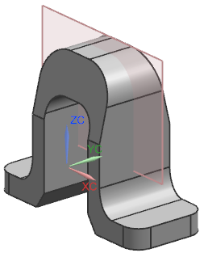
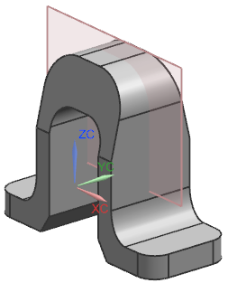

打开并查看部件
-
打开 exp2_holder。

使用表达式，您将在每个弯边创建两个安装孔，孔大小与公式 A/4有关，其中 A 为弯边顶部平面区域的宽度，孔的位置由弯边长度 B/4以及宽度 A/2控制。

定位尺寸为从基准平面到孔的中心，以及弯边外侧边到孔中心。
打开 exp2_holder。

使用表达式，您将在每个弯边创建两个安装孔，孔大小与公式 A/4有关，其中 A 为弯边顶部平面区域的宽度，孔的位置由弯边长度 B/4以及宽度 A/2控制。
定位尺寸为从基准平面到孔的中心，以及弯边外侧边到孔中心。